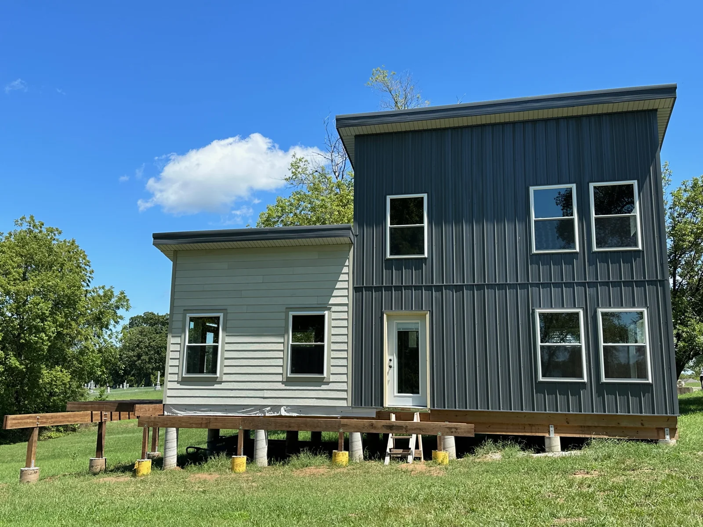
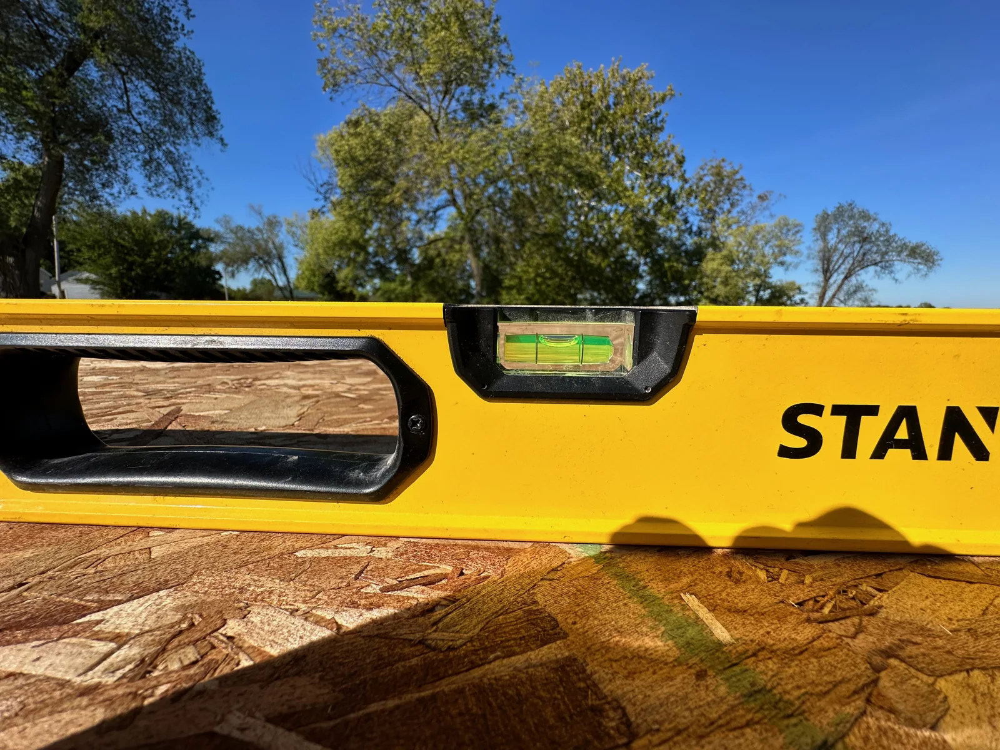
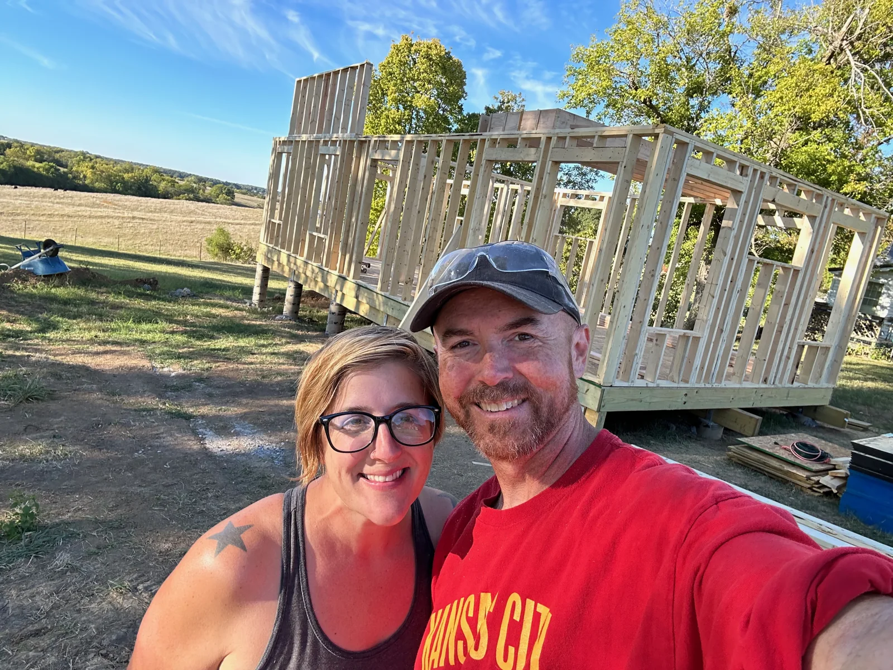
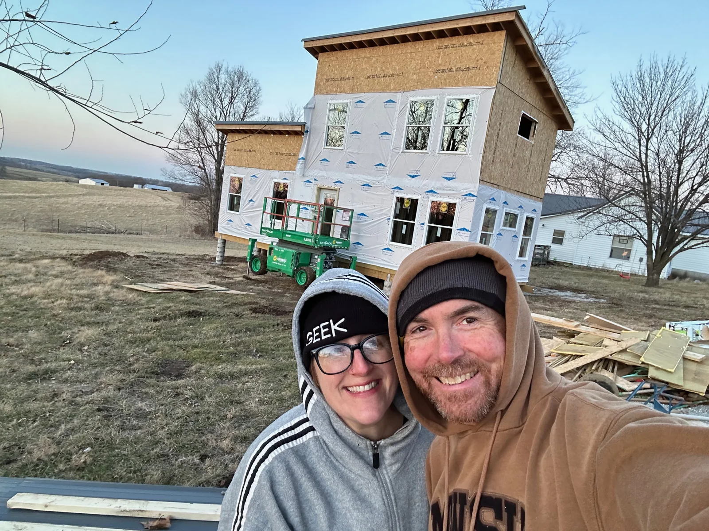
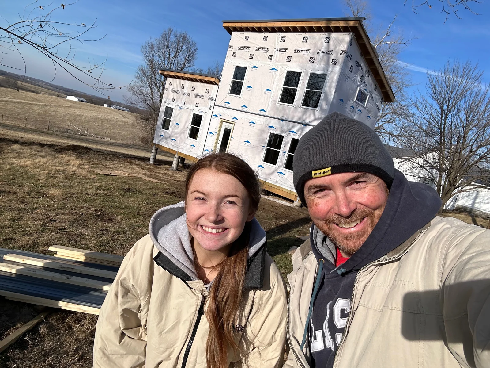
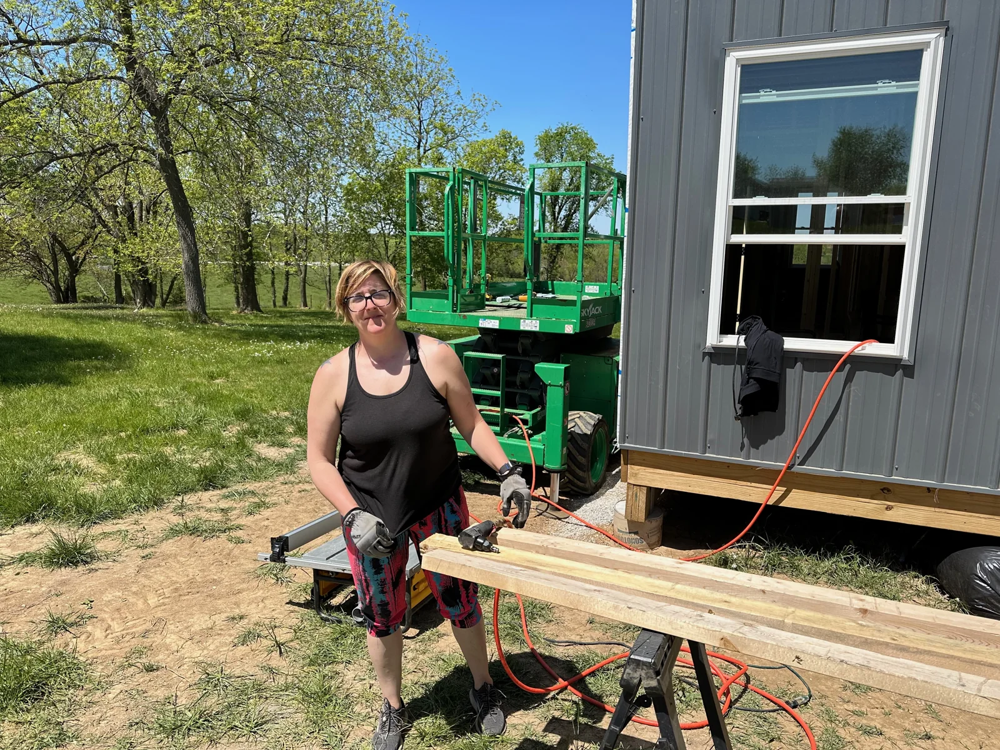
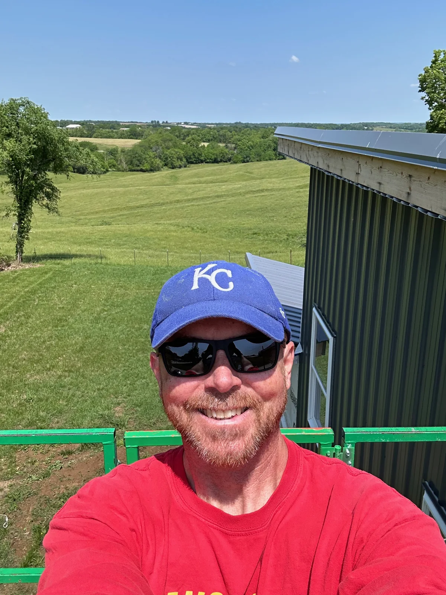
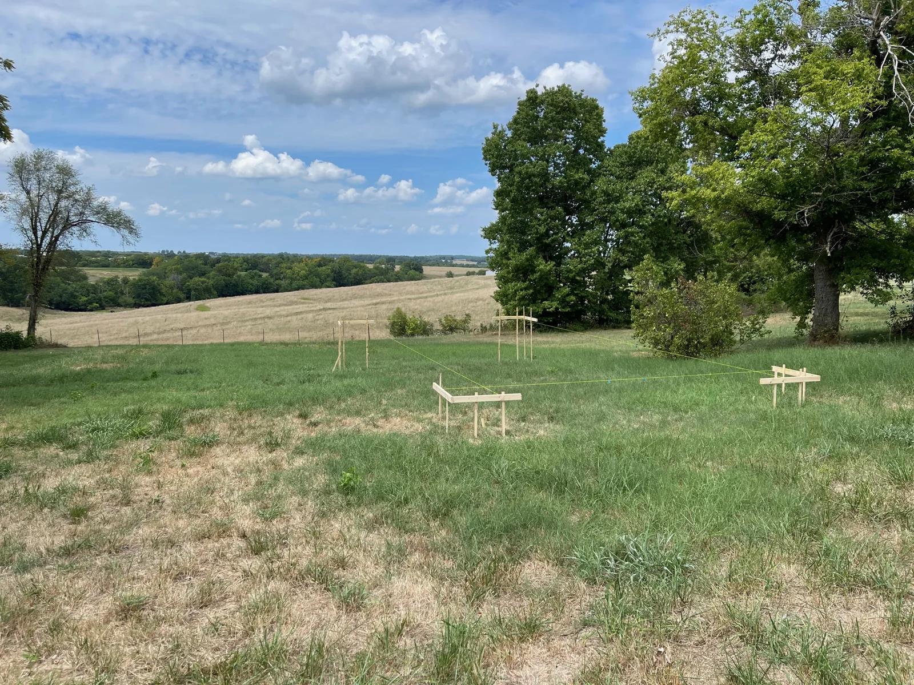
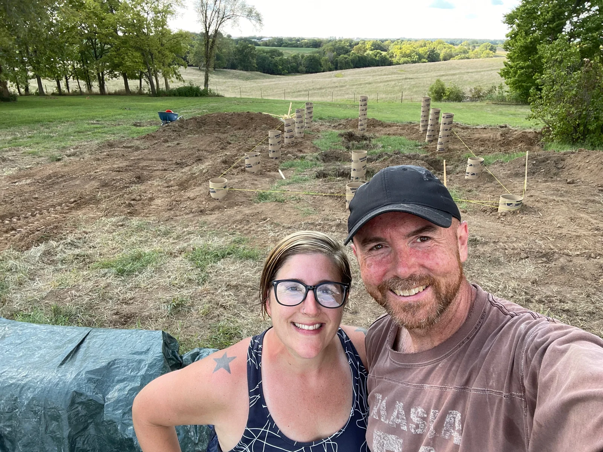
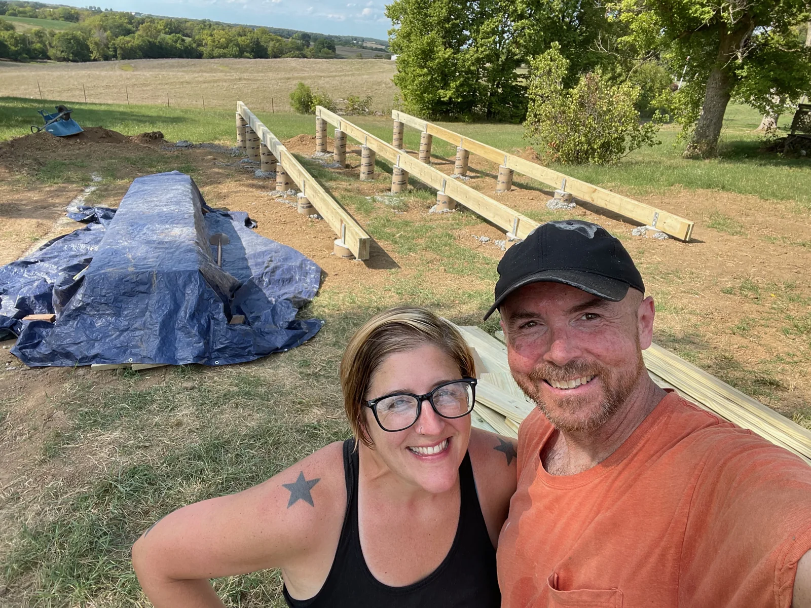

Physical
Katy Manor: First Public Log
The first public note from our house build: one year of buying land, breaking ground, learning slowly, and getting a real structure under roof.

Katy Manor is the house Calleen and I are building ourselves. This first post covers the first year of visible progress, from August 2022 through August 2023. In that time we purchased the property, broke ground, built a pier and beam foundation, framed the house, got the roof on, installed doors and windows, sided the house in metal and fiber cement, and started on the deck.
That list makes the year sound tidier than it felt. We thought we would be farther along by now. Instead, we learned the pace of a project like this: do the next hard thing, recover, learn what you did not know before, and come back for the next one. It has been the hardest physical thing I have ever built, and it has taught us patience in a very practical way.
The property itself has made the work worth it. The view is the thing we keep coming back to, along with the quiet of the country. The house backs up to pasture, and cows often drift into the field behind us. Ludo remains skeptical of these giant dogs.
One pleasant surprise has been the town. I was worried about that part going in, but working with the small-town process has been easy and generous. That has made a hard project feel much more possible.
First-year photo log














